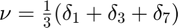
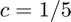
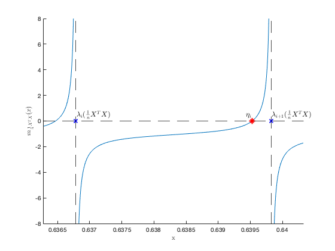

Section 2.4.1: Linear eigenvalue statistics
This page contains an application example of Theorem 2.11: estimating population eigenvalues.
Fully separable case with  and 
Contents
Empirical eigenvalues of versus limiting spectrum
close all; clear; clc coeff = 3; p = 200*coeff; n = 1000*coeff; c = p/n; eigs_C = [1,3,7]; eigs_C_vec = [eigs_C(1)*ones(p/3,1); eigs_C(2)*ones(p/3,1); eigs_C(3)*ones(p/3,1)]; C = diag(eigs_C_vec); % population covariance Z = randn(p,n); X = C^(1/2)*Z; SCM = X'*X/n; eigs_SCM = eig(SCM); edges=linspace(.1,max(eigs_SCM)+.1,100); clear i y = 1e-5; zs = edges+y*1i; mu = zeros(length(zs),1); tilde_m=0; for j=1:length(zs) z = zs(j); tilde_m_tmp=-1; while abs(tilde_m-tilde_m_tmp)>1e-6 tilde_m_tmp=tilde_m; tilde_m = 1/( -z + 1/n*sum(eigs_C_vec./(1+tilde_m*eigs_C_vec)) ); end mu(j)=imag(tilde_m)/pi; end figure %%% limiting versus empirical spectral measure of SCM hold on histogram(eigs_SCM,edges, 'Normalization', 'pdf'); plot(edges,mu,'r', 'Linewidth',2); axis([.1 max(edges)+.5 0 .11]); legend('Empirical eigenvalues of $\frac1n X^T X$', 'Limiting spectrum $\mu$', 'FontSize', 15, 'Interpreter', 'latex')

Visualization of the behavior Stieltjes transform around eigvanlue of
m = @(x) sum(1./(eigs_SCM-x))/n; tol1 = 5e-4; index_eigs_SCM = n-p+51; zoom_eigs_SCM = linspace(eigs_SCM(index_eigs_SCM)-tol1,eigs_SCM(index_eigs_SCM+1)+tol1,1000); tol2 = 3e-5; zoom_eigs_SCM(zoom_eigs_SCM<=eigs_SCM(index_eigs_SCM)+tol2 & zoom_eigs_SCM>=eigs_SCM(index_eigs_SCM)-tol2)=NaN; zoom_eigs_SCM(zoom_eigs_SCM<=eigs_SCM(index_eigs_SCM+1)+tol2 & zoom_eigs_SCM>=eigs_SCM(index_eigs_SCM+1)-tol2)=NaN; % numerical evaluation of zeros of m zeros_m = real(eig(diag(eigs_SCM) - sqrt(eigs_SCM)*sqrt(eigs_SCM')/n)); zero_m = zeros_m(zeros_m<eigs_SCM(index_eigs_SCM+1) & zeros_m>eigs_SCM(index_eigs_SCM)); figure hold on plot(zoom_eigs_SCM, m(zoom_eigs_SCM)); xline(eigs_SCM(index_eigs_SCM),'--k'); xline(eigs_SCM(index_eigs_SCM+1),'--k'); yline(0,'--k'); axis([eigs_SCM(index_eigs_SCM)-tol1 eigs_SCM(index_eigs_SCM+1)+tol1 -8 8]) xlabel('x', 'Interpreter', 'latex') ylabel('$m_{\frac1n X^T X}(x)$', 'Interpreter', 'latex') plot(eigs_SCM(index_eigs_SCM),0,'xb'); text(eigs_SCM(index_eigs_SCM)+1e-5,.5,'$\lambda_i(\frac1n X^T X)$', 'Interpreter', 'latex', 'FontSize',12) plot(eigs_SCM(index_eigs_SCM+1),0,'xb'); text(eigs_SCM(index_eigs_SCM+1)+1e-5,.5,'$\lambda_{i+1}(\frac1n X^T X)$', 'Interpreter', 'latex', 'FontSize',12) plot(zero_m, 0,'*r'); text(zero_m-1e-4, .5,'$\eta_i$', 'Interpreter', 'latex', 'FontSize',12)
Compare population eigenvalue with the proposed estimator
cs = [1/3 1/3 1/3]; disp(eigs_C) disp(sort(popu_eig_estimator(eigs_SCM,p,cs),'ascend')) function popu_eig = popu_eig_estimator(eigs_SCM,p,cs) popu_eig = zeros(size(cs)); n = length(eigs_SCM); zeros_m = sort(real(eig(diag(eigs_SCM) - sqrt(eigs_SCM)*sqrt(eigs_SCM')/n)),'descend'); eigs_SCM = sort(eigs_SCM,'descend'); diff_pole_zero = eigs_SCM - zeros_m; index=1; for a=1:length(cs) popu_eig(a) = n/p/cs(a)*sum(diff_pole_zero(index:index+p*cs(a)-1)); index = index+p*cs(a); end end
1 3 7
1.0010 3.0048 6.9945